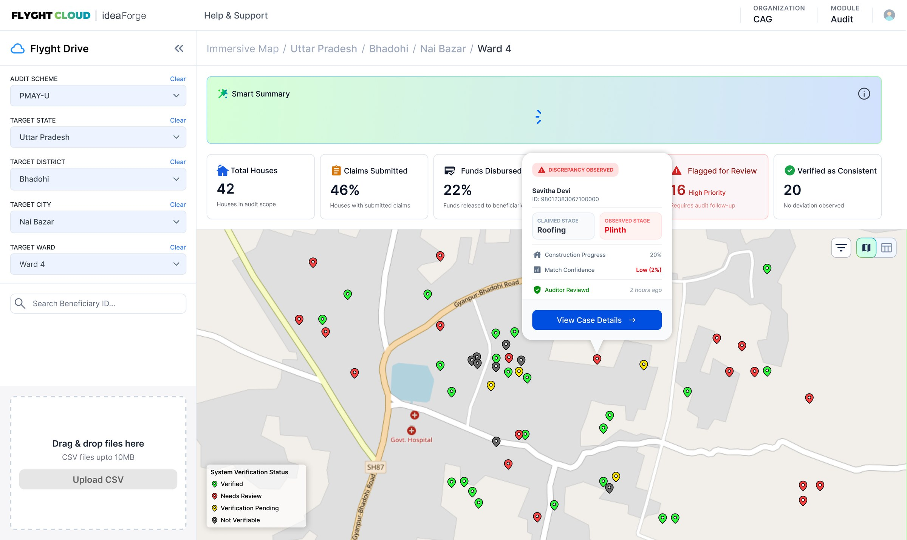
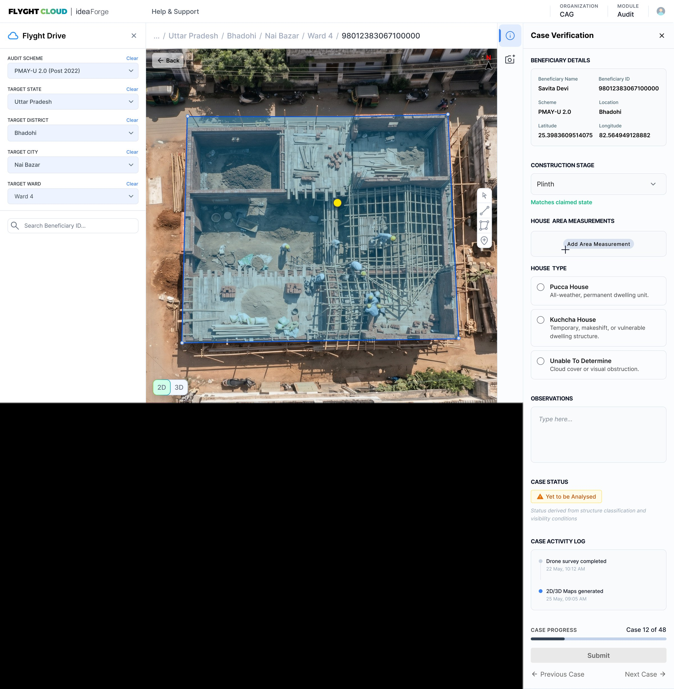

Designing for decisions, not data.
A geospatial audit platform that enables government analysts to remotely verify housing scheme beneficiaries across distributed geographies — using drone imagery, structured workflows, and a decision-centric interface that brings clarity to a process that was previously entirely manual.

PMAY is one of India's largest housing welfare programmes — distributing funds across millions of beneficiaries in hundreds of districts. The Comptroller and Auditor General (CAG) is responsible for verifying that funds are being used correctly.
The existing process was entirely manual: field visits, paper records, and fragmented systems. Auditors had no way to see patterns, prioritise cases, or review evidence remotely. The challenge wasn't just a UX problem — it was a workflow, information architecture, and system design problem.
Verification doesn't scale physically. Millions of housing units spread across remote districts. Field visits for every case aren't viable — yet the existing process had no alternative.
Evidence lives in disconnected silos. Beneficiary records, drone survey outputs, and field observations existed in separate systems. Auditors manually assembled context for every single case.
No structured decision workflow. Without a system, every auditor approached cases differently — making it impossible to ensure consistent, auditable outcomes across teams and districts.
Discrepancies go undetected. Without a comparison layer, construction stage mismatches between what was claimed and what drone imagery showed had no mechanism to surface.
By building a spatial intelligence layer between drone survey data and the auditor's workflow, the system could transform verification from a physical, manual process into a structured, evidence-based operation — where auditors spend their time making informed decisions, not assembling information.
How do auditors actually think about a case? What information do they need, in what order, to feel confident making a judgment? The interface had to be organised around their decision process — not around how the underlying data was structured.
The first design question was: what should the starting point of the audit workflow look like? The natural answer was a data table — a list of beneficiaries with statuses and filters. But the more I understood how auditors think, the clearer it became that geography was the right organising principle. Auditors work by district, block, and ward. They look for patterns across areas, not anomalies in rows.
A spatial overview surfaces patterns that a table cannot revealEach beneficiary is represented as a pin on a real map of the ward. Colour indicates verification status — green for verified, red for discrepancy, yellow for pending. Auditors immediately see where problems cluster, not just how many exist.
The hover card surfaces the most critical comparison — claimed construction stage against what the drone imagery observed — before the auditor opens a case. This lets them triage and prioritise without navigating away from the map.
The four cards at the top — Total Houses, Claims Submitted, Funds Disbursed, Flagged for Review — give auditors the landscape before they dive into cases. They understand the scale and risk profile of the work ahead immediately.
A system-generated summary of the ward's audit status provides structured context at a glance — reducing the time auditors spend mentally assembling a picture before they begin reviewing individual cases.
The most common failure mode in complex audit workflows is context loss — auditors have to move between tools, tabs, and records to gather evidence before they can make a judgment. The case verification screen was designed around a single principle: the evidence an auditor needs to make a confident decision should never be more than a glance away.
Decision quality depends on how easily evidence can be reviewed in context
The dominant area shows the drone survey imagery with a drawn polygon marking the structure boundary. The decision panel sits immediately to the right — auditors review evidence and record their judgment without any navigation between views.
The construction stage field shows the system's comparison result inline — "Matches claimed state" in green when the observed stage aligns with what was claimed. This shifts the auditor's role from detection to confirmation, significantly reducing cognitive load.
House Type uses radio options — Pucca, Kuchcha, Unable to Determine — with brief descriptions. This design decision ensures consistent, auditable classifications across all auditors rather than inconsistent free-text entries that can't be compared or aggregated.
"Case 12 of 48" with Previous/Next navigation gives auditors a clear sense of where they are in their assignment. The activity log below provides a timestamped record of what has happened with the case — supporting accountability and handover.
Design artefacts don't just communicate solutions — they create space for stakeholders to explore, question, and refine ideas before engineering begins. This is how the prototype shaped both the product and the engagement.
Understood how government audit workflows actually operate — who makes decisions, what evidence they rely on, where the process breaks down under real conditions.
Structured the audit process into distinct stages — overview, triage, evidence review, decision — and designed the information architecture before touching Figma.
Built an interactive Figma prototype with enough fidelity that stakeholders could navigate the system independently and explore real scenarios without guidance.
Refined through internal reviews and direct stakeholder sessions — each round of feedback shaped the next iteration and surfaced new requirements.
"When the interactive prototype was introduced, the dynamic of the session shifted. Stakeholders moved closer, began navigating the interface themselves, and started asking 'what if' questions about their actual workflows."
Impact in enterprise product design is rarely a single metric. It shows up as trust built, clarity created, and decisions made with more confidence. Here's an honest account of what this work produced.
Structured the audit process from an informal, manual operation into a consistent, repeatable workflow — with defined stages, evidence requirements, and auditable decision records at every step.
The interactive prototype became the primary medium for requirements conversations with the CAG. Complex operational scenarios could be explored in real time — compressing weeks of documentation cycles into focused sessions.
Identified the field data gap independently during the POC — recognising that the platform was only as reliable as the data feeding it. This directly initiated the design of a complementary mobile field verification tool.
The design work gave the organisation a credible, concrete product to bring to government stakeholders. The engagement materialised and expanded in scope — validating the architectural decisions made early in the process.
This project changed how I think about my role as a designer. The problems were product problems — they required me to work across domain understanding, information architecture, stakeholder communication, and design execution simultaneously.
The most valuable design work on this project happened before any screen was created — defining the stages of the audit workflow, understanding what evidence mattered at each step, and establishing the information architecture that the interface would be built on.
An interactive prototype creates a shared object that teams and clients can react to, explore, and build on together. It's not a validation artefact — it's a communication tool that accelerates alignment and surfaces requirements that documents never surface.
Every design decision on this project was evaluated against one question: does this help auditors make better judgments, faster? That framing eliminated a lot of features that seemed useful but added complexity without improving the core workflow.
Identifying the field data gap — recognising that the platform was only as reliable as the data feeding it — was possible because I was thinking about the whole system, not just the module I was asked to design. That habit of seeing beyond the brief is something I now bring to every project.
This work demonstrates how design operates beyond interfaces — structuring decisions, building shared understanding, and helping complex systems serve the people who depend on them.